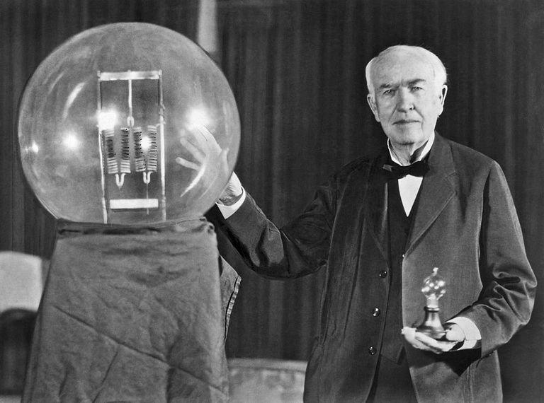

A invenção da lâmpada
Desde os finais do século XVIII, vários homens tentaram obter uma fonte de iluminação que pudesse substituir a fraca luz produzida pelas velas e outros produtos combustíveis. No ano de 1802, temos um dos primeiros registros de um protótipo de lâmpada e no decorrer deste mesmo século algumas outras dezenas dessa mesma tentativa.
Contudo, no final do XIX, foi o inventor Thomas Alva Edison que conseguiu resolver esse desafio com uma lâmpada feita por meio de um de carvão a vácuo que conseguia uma boa iluminação durante um período maior de tempo. Muito consciente de toda a repercussão que sua experiência poderia causar, Edison patenteou a nova descoberta e fundou uma empresa que fabricaria e venderia em larga escala o seu modelo de lâmpada incandescente.
Algum tempo depois, talvez notando a lucratividade que o produto teria, uma empresa rival passou a fabricar um modelo de lâmpada bastante semelhante àquele que exigiu horas e mais horas de estudo e experimento por parte de Thomas Edison. Inconformado com a situação, o estudioso norte-americano abriu um processo judicial contra a empresa que tentou lucrar à custa de um trabalho alheio.
Para provar que estava sendo prejudicado pela deslealdade de um concorrente comercial, Edison contou com o auxílio de um assistente que apresentou uma antiga caixa com vinte e três lâmpadas semelhante às que eram comercializadas por seu patrão. Com isso, Thomas Edison não só provou a autoria e o plágio das lâmpadas incandescentes, bem como atraiu o investimento de grandes magnatas da época que deram origem à famosa marca de eletroeletrônicos “General Electric”.
